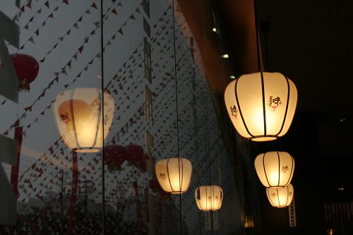
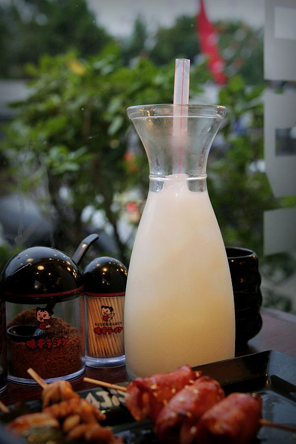

周末看了两部碟《Defiance》（反抗军）和《新宿事件》。
《新宿事件》被禁可能与片头中国人偷渡情节有关，实在是壮观！片子介绍90年代初是大陆偷渡去日本的鼎盛时期，后经济发展，偷渡潮才逐渐消退。该片通过UUSEE即可看到视频，不过还是买了DVD回家。
这次成龙大哥在该片中奉献他的诸多第一次，第一次不打，第一次演坏人，第一次杀人。老徐演成龙大哥的旧情人，嫁给黑帮老大生下一女，和服真比中国古装适合老徐，衬托地老徐楚楚动人。老徐应该和我同年吧，还持着青春期的声调甚是悦耳，20岁还是30岁对她无非是数字变化罢了，从A电影到B电影再到第N部电影，我看老徐都是一个样儿，角色变化了演技没变化。片中的吴彦祖和范冰冰起着美化画面的作用，看不出更多的彩儿。更喜欢那个留着两片胡子的胖子中国人，后来被自己人杀死，以及饰演老徐丈夫的黑帮老大，这两人的演技我个人观点还是有点看头的。
据说导演尔冬升用了三年时间来收集新宿的相关素材，那个歌舞伎町的夜城市，也有我的一丝丝一些些印象。新宿SUMITOMO被称为东京的副中心，位于市区西南部，这里既有现代的流行摇滚，也有古典音乐及歌舞伎演出。那些花街柳巷，用日本话说叫“欢乐街”。兴盛的色情业，出没其间的明星富婆们，给新宿这“日本第一繁华街”增添了别样的风情......总体来说值得买来一看，如果把这部片给从日本留学回来的同事看，他们会是怎样的感受？
《Defiance》的男主角是现007扮演者Daniel Craig，又是一部犹太人的血泪史。讲述弟兄四人如何领导几百个犹太人在森林中东躲西藏度过了两年多被猎杀的危险与苦难，他们一直坚持到战争结束，这个森林中建立的社区最后发展到1200人，全部躲过纳粹的毒害。因为Daniel Craig的出演，这部电影多了些让人寻味的东西，还不错。看的时候我在想，万一某一天面临如此灭顶之灾，是不是能象他们一样坚强的活下去？看来时常学习点儿野外生存技巧并没坏处，也许某天就用上了呢？
在“味千拉面”解决周末最后一餐；

天色渐渐暗下来，灯笼渐渐亮起来，对比着很好看；

培根里面卷着一颗小西红柿，味道还不错；

店里新推的饮品，有水蜜桃的味道，里面加了冰块；

办了手机上网的包月，方便很多啊；

“味千拉面”的服务生。

14 Responses to “周末看碟”
2009-07-12
文字呢？去哪儿腐败了？
2009-07-12
刚写完，在家FB看电影，哪儿也没去：）
2009-07-13
哇，偷拍！说老徐角色变化了演技没变化也没错。。。人家那是以不变应万变。
2009-07-13
周末过得不错啊～这天选择在家最明智。喜欢片2的感觉。
2009-07-13
每个周末都很精彩
2009-07-13
昨去华纳看了《冰川时代3》，3D的效果没有觉得太震撼，不过剧情还是蛮好玩。散场后看见一堆堆的小朋友们，有点汗颜-_-b
2009-07-13
汗颜什么？惯性思维啊？国外的动画片也适合成人看的呀，看过《冰川时代》I、II，第三部还没看，眼馋呢~
2009-07-13
新饮是冰茶么？看上去多么清凉！
周末和你看的一样片《新宿》，唯一感慨就是徐的演技太逊。。。
2009-07-13
这就是惯性思维么，表搞的这么复杂，有点情绪纠结很正常吧。你在现场看看，就能体会我的心情了。当时还跟朋友说了一句，现在的动画片真是老少皆宜。。还有个感觉，跟小朋友们看电影要有耐心，因为他们比较吵，比较吵。。
2009-07-13
那饮料看上去很好喝，喜欢那样的瓶子
2009-07-13
不是茶，就是水一样的饮料，味道象水蜜桃。
瓶子我也好喜欢，看着好有食欲啊~
2009-07-13
昨天去办手机上网包月，那种20元无限量的套餐没有了：-(
你手机够酷啊～
2009-07-13
i like your mobile phone, very cute
2009-08-08
那个胖子叫林雪，老拍这种片子
Leave A Reply
存档只读，评论已关闭。